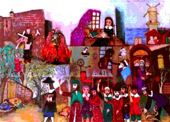

Tuesday, April the 6th, 2004
back to: title, date or indexes
I mentioned this book in yesterday's Rant. Now it transpires that it actually exists:
Dear Hooting Yard : I have been searching the internet for references to Spinoza's Rhubarb in vain for some years. As the owner of the only known copy of this work (Printed in Venice in 1668) I have become what my family call ‘pathologically obsessed’ with promulgating the philosophy of Spinoza's greatest but least known work. In my eagerness to spread the word I have created a number of ‘stump work’ pictures showing the life of Spinoza and have been touring the exhibition around the churches and chapels of my native country for some years. I wonder if you would have space on your website for a picture of one of my latest works. I would be so grateful if this were possible. Yours in hope and with God's Blessing, Stanley J. Cachinnatione, Montana, USA
